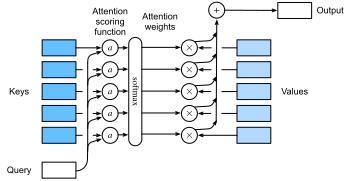

11.3. 注意力评分函数¶
在 11.2节 中， 我们使用了若干不同的基于距离的核，包括高斯核， 来建模查询与键之间的交互。 事实证明， 距离函数的计算开销比点积略大。 因此， 在利用 softmax 运算确保注意力权重非负的前提下， 大量工作都投入到注意力评分函数（attention scoring function）\(a\) 上， 即 (11.1.3) 和 图11.3.1 中计算更为简单的那些函数。

图11.3.1 把注意力汇聚的输出计算为值的加权平均， 其中权重由注意力评分函数\(\mathit{a}\)和 softmax 运算计算得到。¶
import math
import torch
from torch import nn
from d2l import torch as d2l
import math
from mxnet import np, npx
from mxnet.gluon import nn
from d2l import mxnet as d2l
npx.set_np()
import math
import jax
from flax import linen as nn
from jax import numpy as jnp
from d2l import jax as d2l
import tensorflow as tf
from d2l import tensorflow as d2l
11.3.1. 点积注意力¶
让我们先回顾一下由高斯核导出的注意力函数（不含指数化）：
首先，注意最后一项只依赖于\(\mathbf{q}\)。 因此，它对所有\((\mathbf{q}, \mathbf{k}_i)\)对都是相同的。 像 (11.1.3) 那样把注意力权重规范化为\(1\)， 可以确保这一项完全消失。 其次，注意批量规范化和层规范化（稍后讨论） 都会使激活值具有有界且通常是常数的范数\(\|\mathbf{k}_i\|\)。 例如，当键\(\mathbf{k}_i\)由层规范化生成时就是这种情况。 因此，我们可以把它从\(a\)的定义中去掉， 而不会对结果造成什么重大的改变。
最后，我们需要把指数函数中参数的数量级控制在适当范围内。 假设查询\(\mathbf{q} \in \mathbb{R}^d\)和键\(\mathbf{k}_i \in \mathbb{R}^d\)的所有元素 都是均值为零、方差为一的独立同分布随机变量。 两个向量的点积均值为零，方差为\(d\)。 为了确保无论向量长度如何， 点积的方差都保持为\(1\)， 我们使用缩放点积注意力（scaled dot-product attention）评分函数。 也就是说，我们把点积按\(1/\sqrt{d}\)重新缩放。 由此，我们就得到了第一个常用的注意力函数， 例如 Transformer 中就使用了它 (Vaswani et al., 2017)：
注意，注意力权重\(\alpha\)仍然需要规范化。 利用 (11.1.3)， 我们可以通过 softmax 运算进一步简化：
事实证明，所有流行的注意力机制都使用 softmax， 因此在本章余下部分我们将只讨论这种情形。
11.3.2. 便利函数¶
我们需要一些函数，使注意力机制能够高效地部署。 这包括处理变长序列（自然语言处理中很常见）的工具， 以及在小批量上高效求值（批量矩阵乘法）的工具。
11.3.2.1. 掩码 softmax 运算¶
注意力机制最流行的应用之一是序列模型。 因此，我们需要能够处理不同长度的序列。 在某些情况下，这些序列可能被放进同一个小批量， 从而需要用哑词元为较短的序列填充 （示例见 10.5节）。 这些特殊词元不携带含义。 例如，假设我们有下面三个句子：
Dive into Deep Learning
Learn to code <blank>
Hello world <blank> <blank>
由于我们的注意力模型中不需要空白， 我们只需把\(\sum_{i=1}^n \alpha(\mathbf{q}, \mathbf{k}_i) \mathbf{v}_i\)限制为\(\sum_{i=1}^l \alpha(\mathbf{q}, \mathbf{k}_i) \mathbf{v}_i\)， 其中\(l \leq n\)是实际句子的长度。 由于这是一个非常普遍的问题， 它有一个名称：掩码 softmax 运算（masked softmax operation）。
让我们实现它。 实际上，该实现稍微“作弊”了一下： 把\(\mathbf{v}_i\)（\(i > l\)）的值设为零。 此外，它把注意力权重设为一个很大的负数， 例如\(-10^{6}\)， 以便让它们对梯度和值的贡献在实际中消失。 这样做是因为线性代数核与运算符 针对 GPU 做了大量优化， 稍微浪费一些计算， 也比使用带条件（if then else）语句的代码更快。
def masked_softmax(X, valid_lens): #@save
"""Perform softmax operation by masking elements on the last axis."""
# X: 3D tensor, valid_lens: 1D or 2D tensor
def _sequence_mask(X, valid_len, value=0):
maxlen = X.size(1)
mask = torch.arange((maxlen), dtype=torch.float32,
device=X.device)[None, :] < valid_len[:, None]
X[~mask] = value
return X
if valid_lens is None:
return nn.functional.softmax(X, dim=-1)
else:
shape = X.shape
if valid_lens.dim() == 1:
valid_lens = torch.repeat_interleave(valid_lens, shape[1])
else:
valid_lens = valid_lens.reshape(-1)
# On the last axis, replace masked elements with a very large negative
# value, whose exponentiation outputs 0
X = _sequence_mask(X.reshape(-1, shape[-1]), valid_lens, value=-1e6)
return nn.functional.softmax(X.reshape(shape), dim=-1)
def masked_softmax(X, valid_lens): #@save
"""Perform softmax operation by masking elements on the last axis."""
# X: 3D tensor, valid_lens: 1D or 2D tensor
if valid_lens is None:
return npx.softmax(X)
else:
shape = X.shape
if valid_lens.ndim == 1:
valid_lens = valid_lens.repeat(shape[1])
else:
valid_lens = valid_lens.reshape(-1)
# On the last axis, replace masked elements with a very large negative
# value, whose exponentiation outputs 0
X = npx.sequence_mask(X.reshape(-1, shape[-1]), valid_lens, True,
value=-1e6, axis=1)
return npx.softmax(X).reshape(shape)
def masked_softmax(X, valid_lens): #@save
"""Perform softmax operation by masking elements on the last axis."""
# X: 3D tensor, valid_lens: 1D or 2D tensor
def _sequence_mask(X, valid_len, value=0):
maxlen = X.shape[1]
mask = jnp.arange((maxlen),
dtype=jnp.float32)[None, :] < valid_len[:, None]
return jnp.where(mask, X, value)
if valid_lens is None:
return nn.softmax(X, axis=-1)
else:
shape = X.shape
if valid_lens.ndim == 1:
valid_lens = jnp.repeat(valid_lens, shape[1])
else:
valid_lens = valid_lens.reshape(-1)
# On the last axis, replace masked elements with a very large negative
# value, whose exponentiation outputs 0
X = _sequence_mask(X.reshape(-1, shape[-1]), valid_lens, value=-1e6)
return nn.softmax(X.reshape(shape), axis=-1)
def masked_softmax(X, valid_lens): #@save
"""Perform softmax operation by masking elements on the last axis."""
# X: 3D tensor, valid_lens: 1D or 2D tensor
def _sequence_mask(X, valid_len, value=0):
maxlen = X.shape[1]
mask = tf.range(start=0, limit=maxlen, dtype=tf.float32)[
None, :] < tf.cast(valid_len[:, None], dtype=tf.float32)
if len(X.shape) == 3:
return tf.where(tf.expand_dims(mask, axis=-1), X, value)
else:
return tf.where(mask, X, value)
if valid_lens is None:
return tf.nn.softmax(X, axis=-1)
else:
shape = X.shape
if len(valid_lens.shape) == 1:
valid_lens = tf.repeat(valid_lens, repeats=shape[1])
else:
valid_lens = tf.reshape(valid_lens, shape=-1)
# On the last axis, replace masked elements with a very large negative
# value, whose exponentiation outputs 0
X = _sequence_mask(tf.reshape(X, shape=(-1, shape[-1])), valid_lens,
value=-1e6)
return tf.nn.softmax(tf.reshape(X, shape=shape), axis=-1)
为了演示该函数的工作方式， 考虑一个包含两个样例的小批量，其大小为\(2 \times 4\)， 有效长度分别为\(2\)和\(3\)。 经过掩码 softmax 运算后， 每对向量中超出有效长度的值都被置零。
masked_softmax(torch.rand(2, 2, 4), torch.tensor([2, 3]))
masked_softmax(np.random.uniform(size=(2, 2, 4)), np.array([2, 3]))
masked_softmax(jax.random.uniform(d2l.get_key(), (2, 2, 4)), jnp.array([2, 3]))
masked_softmax(tf.random.uniform(shape=(2, 2, 4)), tf.constant([2, 3]))
如果我们需要更精细地控制 每个样例中两个向量各自的有效长度， 只需使用一个二维的有效长度张量。这得到：
masked_softmax(torch.rand(2, 2, 4), torch.tensor([[1, 3], [2, 4]]))
masked_softmax(np.random.uniform(size=(2, 2, 4)),
np.array([[1, 3], [2, 4]]))
masked_softmax(jax.random.uniform(d2l.get_key(), (2, 2, 4)),
jnp.array([[1, 3], [2, 4]]))
masked_softmax(tf.random.uniform((2, 2, 4)), tf.constant([[1, 3], [2, 4]]))
11.3.2.2. 批量矩阵乘法¶
另一个常用的运算是在批次之间进行矩阵乘法。 当我们要处理查询、键和值的小批量时，这会很方便。 更具体地说，假设
那么，批量矩阵乘法（batch matrix multiplication，BMM）计算按元素的乘积
让我们在深度学习框架中看看它的实际效果。
Q = torch.ones((2, 3, 4))
K = torch.ones((2, 4, 6))
d2l.check_shape(torch.bmm(Q, K), (2, 3, 6))
Q = np.ones((2, 3, 4))
K = np.ones((2, 4, 6))
d2l.check_shape(npx.batch_dot(Q, K), (2, 3, 6))
Q = jnp.ones((2, 3, 4))
K = jnp.ones((2, 4, 6))
d2l.check_shape(jax.lax.batch_matmul(Q, K), (2, 3, 6))
Q = tf.ones((2, 3, 4))
K = tf.ones((2, 4, 6))
d2l.check_shape(tf.matmul(Q, K).numpy(), (2, 3, 6))
11.3.3. 缩放点积注意力¶
让我们回到 (11.3.2) 中介绍的点积注意力。 一般而言，它要求查询和键 具有相同的向量长度，设为\(d\)， 尽管这个问题可以很容易地解决： 把\(\mathbf{q}^\top \mathbf{k}\)替换为\(\mathbf{q}^\top \mathbf{M} \mathbf{k}\)， 其中\(\mathbf{M}\)是为在两个空间之间 进行转换而适当选取的矩阵。目前先假定维度匹配。
实践中，为了效率我们往往考虑小批量， 例如为\(n\)个查询和\(m\)个键值对计算注意力， 其中查询和键的长度为\(d\)， 值的长度为\(v\)。于是，查询\(\mathbf Q\in\mathbb R^{n\times d}\)、 键\(\mathbf K\in\mathbb R^{m\times d}\)、 和值\(\mathbf V\in\mathbb R^{m\times v}\) 的缩放点积注意力可以写成
请注意，当把它应用于小批量时， 我们需要 (11.3.5) 中介绍的批量矩阵乘法。 在下面缩放点积注意力的实现中， 我们使用暂退法对模型进行正则化。
class DotProductAttention(nn.Module): #@save
"""Scaled dot product attention."""
def __init__(self, dropout):
super().__init__()
self.dropout = nn.Dropout(dropout)
# Shape of queries: (batch_size, no. of queries, d)
# Shape of keys: (batch_size, no. of key-value pairs, d)
# Shape of values: (batch_size, no. of key-value pairs, value dimension)
# Shape of valid_lens: (batch_size,) or (batch_size, no. of queries)
def forward(self, queries, keys, values, valid_lens=None):
d = queries.shape[-1]
# Swap the last two dimensions of keys with keys.transpose(1, 2)
scores = torch.bmm(queries, keys.transpose(1, 2)) / math.sqrt(d)
self.attention_weights = masked_softmax(scores, valid_lens)
return torch.bmm(self.dropout(self.attention_weights), values)
class DotProductAttention(nn.Block): #@save
"""Scaled dot product attention."""
def __init__(self, dropout):
super().__init__()
self.dropout = nn.Dropout(dropout)
# Shape of queries: (batch_size, no. of queries, d)
# Shape of keys: (batch_size, no. of key-value pairs, d)
# Shape of values: (batch_size, no. of key-value pairs, value dimension)
# Shape of valid_lens: (batch_size,) or (batch_size, no. of queries)
def forward(self, queries, keys, values, valid_lens=None):
d = queries.shape[-1]
# Set transpose_b=True to swap the last two dimensions of keys
scores = npx.batch_dot(queries, keys, transpose_b=True) / math.sqrt(d)
self.attention_weights = masked_softmax(scores, valid_lens)
return npx.batch_dot(self.dropout(self.attention_weights), values)
class DotProductAttention(nn.Module): #@save
"""Scaled dot product attention."""
dropout: float
# Shape of queries: (batch_size, no. of queries, d)
# Shape of keys: (batch_size, no. of key-value pairs, d)
# Shape of values: (batch_size, no. of key-value pairs, value dimension)
# Shape of valid_lens: (batch_size,) or (batch_size, no. of queries)
@nn.compact
def __call__(self, queries, keys, values, valid_lens=None,
training=False):
d = queries.shape[-1]
# Swap the last two dimensions of keys with keys.swapaxes(1, 2)
scores = queries@(keys.swapaxes(1, 2)) / math.sqrt(d)
attention_weights = masked_softmax(scores, valid_lens)
dropout_layer = nn.Dropout(self.dropout, deterministic=not training)
return dropout_layer(attention_weights)@values, attention_weights
class DotProductAttention(tf.keras.layers.Layer): #@save
"""Scaled dot product attention."""
def __init__(self, dropout):
super().__init__()
self.dropout = tf.keras.layers.Dropout(dropout)
# Shape of queries: (batch_size, no. of queries, d)
# Shape of keys: (batch_size, no. of key-value pairs, d)
# Shape of values: (batch_size, no. of key-value pairs, value dimension)
# Shape of valid_lens: (batch_size,) or (batch_size, no. of queries)
def call(self, queries, keys, values, valid_lens=None, **kwargs):
d = queries.shape[-1]
scores = tf.matmul(queries, keys, transpose_b=True)/tf.math.sqrt(
tf.cast(d, dtype=tf.float32))
self.attention_weights = masked_softmax(scores, valid_lens)
return tf.matmul(self.dropout(self.attention_weights, **kwargs), values)
为了演示DotProductAttention类的工作方式，
我们使用前面加性注意力的玩具示例中的 同一组键、值和有效长度。
就本例而言， 我们假设小批量大小为\(2\)，
共有\(10\)个键和值， 值的维数为\(4\)。 最后，我们假设
每个观测的有效长度分别为\(2\)和\(6\)。
据此，我们期望输出是一个\(2 \times 1 \times 4\)的张量，
即小批量中每个样例一行。
queries = torch.normal(0, 1, (2, 1, 2))
keys = torch.normal(0, 1, (2, 10, 2))
values = torch.normal(0, 1, (2, 10, 4))
valid_lens = torch.tensor([2, 6])
attention = DotProductAttention(dropout=0.5)
attention.eval()
d2l.check_shape(attention(queries, keys, values, valid_lens), (2, 1, 4))
queries = np.random.normal(0, 1, (2, 1, 2))
keys = np.random.normal(0, 1, (2, 10, 2))
values = np.random.normal(0, 1, (2, 10, 4))
valid_lens = np.array([2, 6])
attention = DotProductAttention(dropout=0.5)
attention.initialize()
d2l.check_shape(attention(queries, keys, values, valid_lens), (2, 1, 4))
queries = jax.random.normal(d2l.get_key(), (2, 1, 2))
keys = jax.random.normal(d2l.get_key(), (2, 10, 2))
values = jax.random.normal(d2l.get_key(), (2, 10, 4))
valid_lens = jnp.array([2, 6])
attention = DotProductAttention(dropout=0.5)
(output, attention_weights), params = attention.init_with_output(
d2l.get_key(), queries, keys, values, valid_lens)
print(output)
queries = tf.random.normal(shape=(2, 1, 2))
keys = tf.random.normal(shape=(2, 10, 2))
values = tf.random.normal(shape=(2, 10, 4))
valid_lens = tf.constant([2, 6])
attention = DotProductAttention(dropout=0.5)
d2l.check_shape(attention(queries, keys, values, valid_lens, training=False),
(2, 1, 4))
让我们检查一下， 注意力权重在分别超出第二列和第六列之后 是否真的消失了 （因为有效长度被设为\(2\)和\(6\)）。
d2l.show_heatmaps(attention.attention_weights.reshape((1, 1, 2, 10)),
xlabel='Keys', ylabel='Queries')
d2l.show_heatmaps(attention.attention_weights.reshape((1, 1, 2, 10)),
xlabel='Keys', ylabel='Queries')
d2l.show_heatmaps(attention_weights.reshape((1, 1, 2, 10)),
xlabel='Keys', ylabel='Queries')
d2l.show_heatmaps(tf.reshape(attention.attention_weights, (1, 1, 2, 10)),
xlabel='Keys', ylabel='Queries')
11.3.4. 加性注意力¶
当查询\(\mathbf{q}\)和键\(\mathbf{k}\) 是维数不同的向量时， 我们要么借助一个矩阵， 通过\(\mathbf{q}^\top \mathbf{M} \mathbf{k}\) 来解决不匹配问题， 要么使用加性注意力作为评分函数。 另一个好处是， 正如其名称所示，这种注意力是加性的。 这可以带来一些小的计算节省。 给定查询\(\mathbf{q} \in \mathbb{R}^q\) 和键\(\mathbf{k} \in \mathbb{R}^k\)， 加性注意力（additive attention）评分函数 (Bahdanau et al., 2014) 为
其中\(\mathbf W_q\in\mathbb R^{h\times q}\)、 \(\mathbf W_k\in\mathbb R^{h\times k}\)， 以及\(\mathbf w_v\in\mathbb R^{h}\)是可学习的参数。 这一项随后被送入 softmax， 以确保非负性和规范化。 对 (11.3.7) 的等价解释是： 把查询和键连结起来， 送入一个带有单个隐藏层的 MLP。 我们使用\(\tanh\)作为激活函数并禁用偏置项， 如下实现加性注意力：
class AdditiveAttention(nn.Module): #@save
"""Additive attention."""
def __init__(self, num_hiddens, dropout, **kwargs):
super(AdditiveAttention, self).__init__(**kwargs)
self.W_k = nn.LazyLinear(num_hiddens, bias=False)
self.W_q = nn.LazyLinear(num_hiddens, bias=False)
self.w_v = nn.LazyLinear(1, bias=False)
self.dropout = nn.Dropout(dropout)
def forward(self, queries, keys, values, valid_lens):
queries, keys = self.W_q(queries), self.W_k(keys)
# After dimension expansion, shape of queries: (batch_size, no. of
# queries, 1, num_hiddens) and shape of keys: (batch_size, 1, no. of
# key-value pairs, num_hiddens). Sum them up with broadcasting
features = queries.unsqueeze(2) + keys.unsqueeze(1)
features = torch.tanh(features)
# There is only one output of self.w_v, so we remove the last
# one-dimensional entry from the shape. Shape of scores: (batch_size,
# no. of queries, no. of key-value pairs)
scores = self.w_v(features).squeeze(-1)
self.attention_weights = masked_softmax(scores, valid_lens)
# Shape of values: (batch_size, no. of key-value pairs, value
# dimension)
return torch.bmm(self.dropout(self.attention_weights), values)
class AdditiveAttention(nn.Block): #@save
"""Additive attention."""
def __init__(self, num_hiddens, dropout, **kwargs):
super(AdditiveAttention, self).__init__(**kwargs)
# Use flatten=False to only transform the last axis so that the
# shapes for the other axes are kept the same
self.W_k = nn.Dense(num_hiddens, use_bias=False, flatten=False)
self.W_q = nn.Dense(num_hiddens, use_bias=False, flatten=False)
self.w_v = nn.Dense(1, use_bias=False, flatten=False)
self.dropout = nn.Dropout(dropout)
def forward(self, queries, keys, values, valid_lens):
queries, keys = self.W_q(queries), self.W_k(keys)
# After dimension expansion, shape of queries: (batch_size, no. of
# queries, 1, num_hiddens) and shape of keys: (batch_size, 1,
# no. of key-value pairs, num_hiddens). Sum them up with
# broadcasting
features = np.expand_dims(queries, axis=2) + np.expand_dims(
keys, axis=1)
features = np.tanh(features)
# There is only one output of self.w_v, so we remove the last
# one-dimensional entry from the shape. Shape of scores:
# (batch_size, no. of queries, no. of key-value pairs)
scores = np.squeeze(self.w_v(features), axis=-1)
self.attention_weights = masked_softmax(scores, valid_lens)
# Shape of values: (batch_size, no. of key-value pairs, value
# dimension)
return npx.batch_dot(self.dropout(self.attention_weights), values)
class AdditiveAttention(nn.Module): #@save
num_hiddens: int
dropout: float
def setup(self):
self.W_k = nn.Dense(self.num_hiddens, use_bias=False)
self.W_q = nn.Dense(self.num_hiddens, use_bias=False)
self.w_v = nn.Dense(1, use_bias=False)
@nn.compact
def __call__(self, queries, keys, values, valid_lens, training=False):
queries, keys = self.W_q(queries), self.W_k(keys)
# After dimension expansion, shape of queries: (batch_size, no. of
# queries, 1, num_hiddens) and shape of keys: (batch_size, 1, no. of
# key-value pairs, num_hiddens). Sum them up with broadcasting
features = jnp.expand_dims(queries, axis=2) + jnp.expand_dims(keys, axis=1)
features = nn.tanh(features)
# There is only one output of self.w_v, so we remove the last
# one-dimensional entry from the shape. Shape of scores: (batch_size,
# no. of queries, no. of key-value pairs)
scores = self.w_v(features).squeeze(-1)
attention_weights = masked_softmax(scores, valid_lens)
dropout_layer = nn.Dropout(self.dropout, deterministic=not training)
# Shape of values: (batch_size, no. of key-value pairs, value
# dimension)
return dropout_layer(attention_weights)@values, attention_weights
class AdditiveAttention(tf.keras.layers.Layer): #@save
"""Additive attention."""
def __init__(self, key_size, query_size, num_hiddens, dropout, **kwargs):
super().__init__(**kwargs)
self.W_k = tf.keras.layers.Dense(num_hiddens, use_bias=False)
self.W_q = tf.keras.layers.Dense(num_hiddens, use_bias=False)
self.w_v = tf.keras.layers.Dense(1, use_bias=False)
self.dropout = tf.keras.layers.Dropout(dropout)
def call(self, queries, keys, values, valid_lens, **kwargs):
queries, keys = self.W_q(queries), self.W_k(keys)
# After dimension expansion, shape of queries: (batch_size, no. of
# queries, 1, num_hiddens) and shape of keys: (batch_size, 1, no. of
# key-value pairs, num_hiddens). Sum them up with broadcasting
features = tf.expand_dims(queries, axis=2) + tf.expand_dims(
keys, axis=1)
features = tf.nn.tanh(features)
# There is only one output of self.w_v, so we remove the last
# one-dimensional entry from the shape. Shape of scores: (batch_size,
# no. of queries, no. of key-value pairs)
scores = tf.squeeze(self.w_v(features), axis=-1)
self.attention_weights = masked_softmax(scores, valid_lens)
# Shape of values: (batch_size, no. of key-value pairs, value
# dimension)
return tf.matmul(self.dropout(
self.attention_weights, **kwargs), values)
让我们看看AdditiveAttention是如何工作的。 在我们的玩具示例中，
选取的查询、键和值的大小分别为
\((2, 1, 20)\)、\((2, 10, 2)\)和\((2, 10, 4)\)。
这与我们对DotProductAttention的选择完全相同，
只是现在查询是\(20\)维的。 同样，我们选取\((2, 6)\)
作为小批量中各序列的有效长度。
queries = torch.normal(0, 1, (2, 1, 20))
attention = AdditiveAttention(num_hiddens=8, dropout=0.1)
attention.eval()
d2l.check_shape(attention(queries, keys, values, valid_lens), (2, 1, 4))
queries = np.random.normal(0, 1, (2, 1, 20))
attention = AdditiveAttention(num_hiddens=8, dropout=0.1)
attention.initialize()
d2l.check_shape(attention(queries, keys, values, valid_lens), (2, 1, 4))
queries = jax.random.normal(d2l.get_key(), (2, 1, 20))
attention = AdditiveAttention(num_hiddens=8, dropout=0.1)
(output, attention_weights), params = attention.init_with_output(
d2l.get_key(), queries, keys, values, valid_lens)
print(output)
queries = tf.random.normal(shape=(2, 1, 20))
attention = AdditiveAttention(key_size=2, query_size=20, num_hiddens=8,
dropout=0.1)
d2l.check_shape(attention(queries, keys, values, valid_lens, training=False),
(2, 1, 4))
回顾该注意力函数时， 我们看到其行为与DotProductAttention
在定性上非常相似。
也就是说，只有所选有效长度\((2, 6)\)范围内的项才非零。
d2l.show_heatmaps(attention.attention_weights.reshape((1, 1, 2, 10)),
xlabel='Keys', ylabel='Queries')
d2l.show_heatmaps(attention.attention_weights.reshape((1, 1, 2, 10)),
xlabel='Keys', ylabel='Queries')
d2l.show_heatmaps(attention_weights.reshape((1, 1, 2, 10)),
xlabel='Keys', ylabel='Queries')
d2l.show_heatmaps(tf.reshape(attention.attention_weights, (1, 1, 2, 10)),
xlabel='Keys', ylabel='Queries')
11.3.5. 小结¶
本节中，我们介绍了两个关键的注意力评分函数：点积注意力和加性注意力。它们是跨变长序列进行聚合的有效工具。特别是，点积注意力是现代 Transformer 架构的支柱。当查询和键是长度不同的向量时，我们可以改用加性注意力评分函数。优化这些层是近年来进展的关键领域之一。例如，NVIDIA 的 Transformer 库和 Megatron (Shoeybi et al., 2019) 都严重依赖注意力机制的高效变体。在后续小节回顾 Transformer 时，我们将更详细地深入探讨这一点。
11.3.6. 练习¶
修改
DotProductAttention的代码，实现基于距离的注意力。注意，为了高效实现，你只需要键的平方范数\(\|\mathbf{k}_i\|^2\)。修改点积注意力，利用一个矩阵调整维数，从而允许查询和键具有不同的维数。
计算成本如何随键、查询、值的维数及其数量而变化？内存带宽需求又如何？